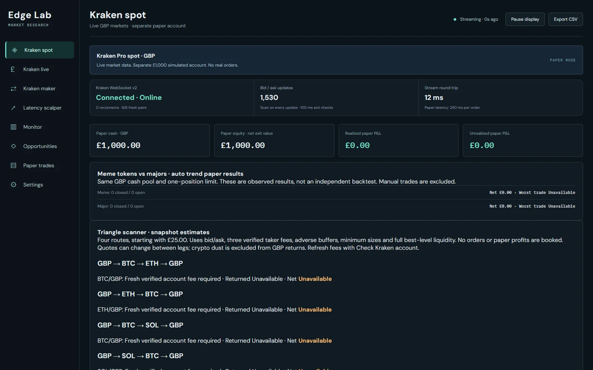
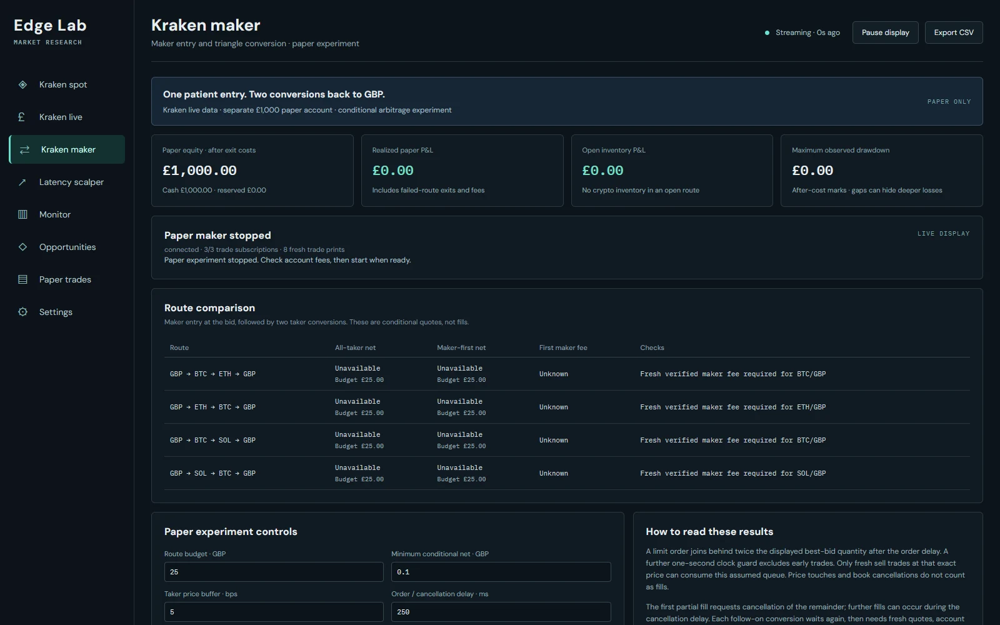

Market research & paper trading
Find the edge.
Measure the real costs.
Explore Kraken markets, triangular routes and maker-first simulations with costs and execution assumptions in view.
Runs on your computerPaper trading controlsPublic source on GitHub
Inside the workstation
See what you’re working with.
Real screenshots from the current app. Public market data is shown alongside simulated paper accounts.

Maker-first research

Follow live markets
Public Kraken streams and BTC lead/lag observations in a local research workspace.
Model execution
Maker queue uncertainty, partial fills, fees, latency and depth assumptions.
Keep your paper ledger
Separate simulated accounts record positions, costs and realized paper results locally.
Choose your platform
Your workstation starts here.
Linux and Mac support public research and paper trading. Authenticated Kraken account checks and real orders require Windows.
Windows
Portable x64 ZIP. Node.js included; extract and run.
Linux
Portable x64 or ARM64 archive with Node.js included.
Mac
Intel and Apple Silicon portable archives. Node.js included.
Getting started
From download to workspace.
- Download the archive for your operating system and extract it into a writable folder.
- On Windows, run
START_EDGE_LAB.bat. On Linux or Mac, run./START_EDGE_LAB.shin Terminal. - Open
http://127.0.0.1:4178and keep the console open. Preserve yourdata/folder when upgrading.
Local by design
The app runs on your computer. This page provides downloads and documentation.
Linux and Mac support public research and paper trading. Authenticated Kraken account checks and real orders require Windows.
Read the full documentation ↗Before you trade
Automated strategies are paper-only. The separate Windows Kraken live tab can submit manually confirmed real-money spot orders after credential setup. Paper results are simulations, not proof of executable profit.